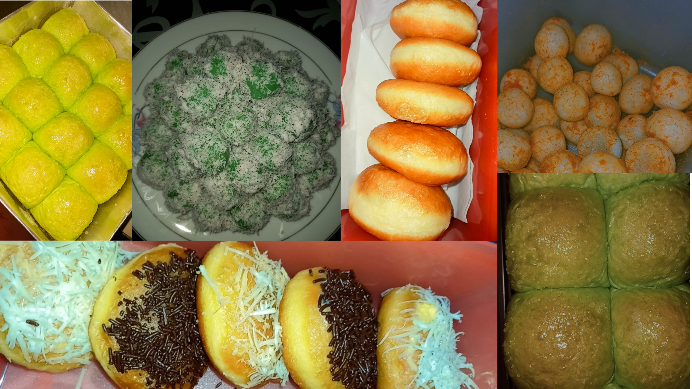

Daily
HI, Welcome to My Daily Story
Actually, what I do everyday is more or less the same as in general for women my age. At my age now, my daily life is only filled with busy studies. but I also often fill my daily life with hobbies that I have. Like cooking, I often bake cakes or bread. I even opened a small business from my hobby. I sell cakes and breads that I make. although the results are not much, but it is very fun to do in your spare time. maybe later I will give you some bread or cake recipes that I have.
Back to my daily story. For my hobby, which is watching movies, I usually do it with my friends. ah yeah, my daily life is also usually filled with playing with my friends. I have close friends from close friends since I was in high school or even now I am in college. even now I still often play with my friends from childhood.
Oh and I think this is the most enjoyable part of my daily life. I usually if I have free time or I'm tired because of college assignments, I often fill my time by watching videos from my idols. because I'm a kpopers heheheh. and I also usually re-watch matches from the Japan volleyball national team. because I really like the players from japan volleyball. I think that's all I can tell you from the daily life I love to do. from my daily life, I highly recommend you to always enjoy your time or even if you are tired you can do things that can make you happy.